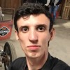
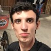

Site profissional
2020 - atual
Texto & Imagens
Meu site profissional, esse aqui mesmo que você está navegando agora. Esse projeto começou em 2020 e continua sendo atualizado e aprimora até os dias de hoje.

Conheça-me profissionalmente.

Veja uma coleção com todos os projetos que eu já realizei, com descrições dos processos envolvidos e fotos para ilustrar os acontecimentos.
2020 - atual
Texto & Imagens
Meu site profissional, esse aqui mesmo que você está navegando agora. Esse projeto começou em 2020 e continua sendo atualizado e aprimora até os dias de hoje.

2022
Texto & Imagens
Um site profissional e WhatsApp Business funcionando em sitonia com o objetivo de promover o agendamento de consultas com o médico Dr. André, oftalmologista de carreira na cidade de Porto Velho, RO.

2021
Texto & Imagens
O desafio do Rebranding da Business School (UP) foi idealizado pelo coordenador e professor Luiz Pinheiro. Eu e mais 4 colegas de turma, William, Bessa, Mayara e Pedro, embarcamos de cabeça no projeto e entregamos a marca que hoje é utilizada pela faculdade.
2020
Texto
A página no Facebook e Instagram Um André em Curitiba foi criada com o intuito de por em prática os conhecimentos que eu estava adquirindo com meu curso de Marketing na Universidade Positivo e também com o curso de Marketing Digital da USP que eu estava fazendo no Coursera.
2019
Texto & Imagens
O Projeto Pintura na Parede ocorreu em 2019, no último ano do Ensino Médio. Uma iniciativa e liderança totalmente feita por nós, à época alunos 3° Ano do Ensino Médio Integral.
2018 - 2019
Texto & Imagens
A WAVE foi uma equipe criada por mim e meus amigos do 2° Ano do Ensino Médio para participar da Olimpíada Brasileira de Robótica (OBR) de 2018.
2017 - 2019
Texto & Imagens
Um projeto pessoal de longa duração com o propósito de organizar as atividades, provas e calendários escolares em um único local e disponibilizá-los para todos.
A ideia de construir o meu site profissional veio lá em 2020, pouco tempo após ter começado a faculdade. O intuito inicial era promover a minha imagem profissional na internet para que, quando adentrasse o mercado de trabalho, pudesse me destacar para além do tradicional currículo em PDF ou da carta de apresentação em txt.
Em meados de 2021 comecei a aprender os princípios do Front-End Dev, ou seja, HTML, CSS e JavaScript, com o fim de desenvolver novamente meu site, porém, dessa vez totalmente do zero, sem o auxílio de ferramentas de criação de sites. Dessa forma poderia ter controle total de como meu site é exibido, formatado e do desempenho do mesmo.
Atualmente o meu site conta com meu vídeo de apresentação, minhas principais habilidades destacadas em tópicos, meu currículo, meus certificados, projetos dos quais eu liderei ou participei e todas as minhas informações de contato. Além de todo o conteúdo presente altamente responsivo aos mais diversos dispositivos (TVs, computadores, tablets e celulares), o site também conta com um desempenho técnico impecável, como apresentado pelo PageSpeed Insights (Google Developers), e boas técnicas de SEO, estando em primerio nas buscas por "André Moura Santos" ─ um resultado do esforço em SEO.
Falando com jargões: A construção do site utiliza as tags mais modernas de HTML e é baseada em pura semântica para acessibilidade e aprimoramento do SEO. Cada seção do site conta com seu conjunto indepente de arquivos HTML, CSS e JavaScript, com um arquivo universal de estilo para agilizar o processo de criação. Com um excelente desempenho no PageSpeed Insights, com uma boa responsividade e 99/100 pontos de performace em computadores e 90/100 em dispositivos móveis de pouca performace.
Em 2022, o site, agora em seu ápice de completude, é o foco de toda a comunicação profissional, estando presente no meu currículo e em todas as minhas comunicações online de cunho profissional, promovendo uma maneira rápida e fácil de conhecer mais sobre minhas habilidades e o meu perfil, sem sequer precisar inicar uma conversa.
O site do Dr. André foi criado com o intuito de promover o agendamento de mais consultas oftamológicas particulares para as clínicas em que o doutor atende. Para isso um plano de três etapas foi criado e se desdobrou em um período de um mês:
Com o caminho do projeto definido, a primeira parte se inicia: O doutor já tinha uma certa presença online, porém exclusivamente gerenciada por terceiros, o que causou diversos problemas como: Endereços incorretos ou antigos, números de telefone de outras clínicas e até mesmo indicação de serviços que não eram mais oferecidos.
A construção do site foi feita usando os princípios mais modernos de semântica do HTML 5 e composição dos estilos em CSS 3, além de pequnas interatividades proporcionadas pelo JavaScript. O site conta com informações relevantes para os pacientes com base na experiência de secretárias que assistiram o doutor no decorrer dos 18 anos de trabalho prestado na cidade.
Com o site pronto e preenchido com as informações que os pacientes procuram, agora é necessário criar um canal por onde seja possível se comunicar rapidamente para tirar dúvidas ou agendar consultas. O canal escolhido foi o WhatsApp, devido a sua onipresença nos dispotiviso móveis no Brasil. O WhatsApp foi construído de maneira a conter as mesmas informações presentes no site, para caso um potencial paciente entre em contato sem ter visto o site, ele ainda possa ter todas as informações necessárias para tomar uma decisão.
Por fim, a campanha de publicidade com base em rede de pesquisa foi implementada, com anúncios que destacam os pontos de vantagem do atendimento do doutor, como fácil agendamento, reagendamento, diversidade de exames oferecidos e especialidades atendidas. Os anúncios na rede de pesquisa em pouco tempo ganharam fôlego e a medidade que o desempenho crescia, o doutor se sentia mais confortável em incrementar os investimentos em sua presença digital.
Em Março de 2021, o professor Luiz Pinheiro, coordenador da Business School da Universidade Positivo, propôs para a nossa turma, o Desafio de Rebranding da Business School. O Desafio foi aceito e prosseguiu com 5 alunos: André Moura, Mayara Cardoso, Pedro Veloso, Victor Bessa e William Carlberg. Para auxiliar e orientar o desenvolvimento do projeto, a professora e pesquisadora Fabiana Mariutti, nossa professora de Gestão de Marcas, foi convidada.
Entre Março e Agosto de 2021, nós 5 desenvolvemos diversas premissas e desdobramos diversos pensamentos sobre: "Como descrever a Business School?", "Quais as pessoas que a Business School quer atingir?" e "Como ela pretende fazer isso?". Ao final de várias rodadas de brainstorming, uma linha de pensamento proposta pela professora orientadora se destacou: "A Business School como Prodígio da Universidade Positivo". Alinhada a essa ideia, acrescentamos a ideia de "Estrela filha orbita a estrela mãe", já que ambas as logos contam com a mesma estrela, a estrela do Grupo Cruzeiro do Sul.
Com indas e vindas, duas apresentações (pitch) sobre os avanços do projeto, votações internas entre a coordenação da Business School e avaliação dos colegas da turma, das várias ideias, duas foram escolhidas e aprofundadas. Foram essas duas as ideias que, em 25 de setembro de 2021, foram apresentadas oficialmente para todos da Business School, durante a reunião dos líderes.
As duas opções foram escolhidas por conta do cliente, que pretende utilizar externamente uma das logos e internamente a outra, o que foi levado em consideração para a finalização das mesmas, quando a ideia foi apresentada.
A última etapa do projeto consiste na entrega dos certificados pela Business School, o que continua em longo atraso. As logos estão prontas desde Agosto de 2021. A equipe decidiu liberar o seu uso, mesmo com o atraso parte da Coordenação na liberação dos certificados.
Também participaram do projeto:
 

A página no Facebook e Instagram Um André em Curitiba foi criada com o intuito de por em prática os conhecimentos que eu estava adquirindo com meu curso de Marketing na Universidade Positivo e também com o curso de Marketing Digital da USP que eu estava fazendo no Coursera.
Com ela eu também aprendi a criar um cronograma, seguir um roteiro, edição de vídeo, imagem e a como tentar manter o engajamento do público no vídeo. Além de também aprender a mexer com o Facebook e Instagram Ads, o que deve ter na descrição ou título do vídeo, o que não deve, como comunicar uma ideia e muitas outras sutis aprendizagens, como aprender a usar o IGTV e a como gerenciar uma conta de criador de conteúdo no Instagram.
Com o fim do meu curso de Marketing Digital, acabou também a minha atividade na página, porém ela continua presente em ambas as redes sociais.
O Projeto Pintura na Parede ocorreu em 2019, no último ano do Ensino Médio. De iniciativa e liderança totalmente feita por nós, alunos 3° Ano do Ensino Médio Integral, uma turma de aproximadamente 20 pessoas, o surgimento da ideia partiu de duas colegas de classe: Elas queriam dar mais cor e vida ao ambiente da sala e todos embarcamos de cabeça na ideia.
Após a permissão da coordenação, começamos a organizar uma vaquinha para arrecadar dinheiro e obter todos os itens necessários para transformar a nossa ideia em realidade. Eu me responsabilizei pela criação e coordenação da vaquinha: Um documento público foi criado no Coda para poder gerenciar o dinheiro e mostrar aos apoiadores para onde eles estava indo. A todos que colaboraram financeiramente, um recibo foi enviado pelo WhatsApp para que pudessem comprovar o apoio caso necessário.

Após um mês, conseguimos juntar dinheiro, comprar os equipamentos e começamos a pintura da parede em setembro: Todos os gastos eram contabilizados no documento do Coda e uma mensagem era enviada a quem colaborou financeiramente a respeito dos gastos e das notas fiscais.
Há um álbum de fotos (fechado apenas para nós e colaboradores) com todo o progresso da pintura, desde o começo com os rabiscos na parede até o final, com todas as paredes desenhadas e coloridas. Ao fim de tudo, também me encarreguei de criar um formulário de feedback sobre o que todos na escola achavam sobre o nosso feito.
De fato o projeto da nossa turma foi tão bem executado que a escola passou a usar a nossa sala como propaganda, mas nós sempre fizemos questão de lembrar a todos que fomos nós que fizemos: Nós tivemos a ideia, nós tomamos a iniciativa, corremos atrás da autorização, de uma sala nova para ficar enquanto pintávamos a nossa. Todos contribuíram essencialmente para tornar isso realidade e temos muito orgulho disso.

A WAVE - Equipe de Robótica foi uma equipe criada com os meus amigos do 2° Ano do Ensino Médio para participar da Olimpíada Brasileira de Robótica (OBR). A escola disponibilizou todo o material necessário para que nós pudéssemos desenvolver nosso robô para as competições.
Foram muitos meses de trabalho, enfrentando diversos problemas tanto de construção quanto de programação. Utilizamos o modelo EV3 da LEGO para construir e programar o robô, que também aceitava programação Python.
Foi um projeto bem legal de se fazer e guardo boas lembranças dessa época! Sinto que consegui crescer muito meu trabalho em equipe e resolução de problemas com ele, pois sempre tínhamos um problema novo para resolver e precisávamos encontrar as mais variadas soluções para cada um deles.
Infelizmente não conseguimos passar para etapa nacional, mas a EPR (Equipe de Pesquisa e Robótica), a equipe dos alunos do 3° Ano de Ensino Médio que estavam nos auxiliando, conseguiu ir. Ficamos todos muitos felizes pelo feito!
O Ensino Médio com Trello (EMcT), foi uma iniciativa própria para ajudar meus colegas de classe com o volume de atividades e afazeres do Ensino Médio. Com começo em 24 de abril de 2017, no primeiro ano do Ensino Médio, o projeto utilizava o Trello e suas funcionalidades para descrever as atividades, os conteúdos de provas e postar revisões das matérias.
Com o tempo o quadro foi crescendo, em número de usuários e funções. Em 2018 um grupo foi criado no WhatsApp e um workspace no Slack também. Neste mesmo ano começou a ser disponibilizado calendário de provas e horários de aulas personalizados do projeto, mais simplificados e melhor desenhados que os disponibilizados pela escola.
Em 2019, apenas alterações incrementais foram feitas, já que era o último ano de funcionamento do quadro. Durante todos esses anos o quadro passou por redesenhos de uso, inserção de novas funcionalidades, encerramento de outras, redesigns, novas formatações de texto e muito mais.
Todas as informações sobre o projeto, suas ramificações, programas e serviços utilizados, histórico de alterações e muito mais podem ser encontrados na Wiki do EMcT - Web e na Iniciativa Projeto Aberto, também do EMcT - Web.